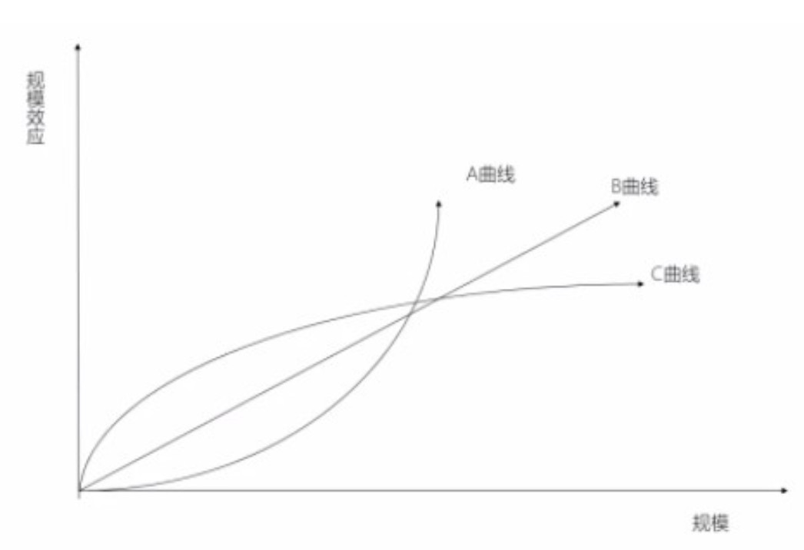

如何做决策
Must Watch!
MustWatch
如何做决策？
空间有多个含义，不同的地区、业务都是空间;
在不同的时空里，不同的Strategy是变化的。
一、市场体量
- 1.体量很重要
饿了么以不亏钱的方式经营，年增长率200%。
当时，一天几万单，如果一个业务不亏损，增速还这么快，说明需求非常强烈。
市场体量和增速有一个默认的关系：在一定体量下，如果有一个增速的话，基本就可以拟合出市场总体体量(但这有时候是一种常识)。
- 2.判断方法
市场体量的估算对创业者很重要，对投资人也很重要，但非常难。
第一种方法，根据现有的行业体量和增速进行拟合，但这需要行业发展了一段时间才能拟合，然后在发展过程中不断地对齐拟合，拟合得越准，越有竞争力。
第二种方法，回到人类最根本的需求——人类发展的轨迹就是将原来自给自足的一些事交给化社会分工来完成。
社会化分工的大趋势里，吃饭是最没有被社会化分工取代的需求之一，随着全球城市化的进展，家庭规模大时，做饭有规模效应，家庭规模越来越小，就没有规模效应了。
所以，做饭有被社会化分工取代的趋势。
从供给端看，中国人口密度高、手机普及(让系统派单这种高效方式可行)，电单车成本全球成本最低，每一项都会导致更低的客单价，进而扩大市场空间。
第三种是类比法，参考日本便利店的市场体量，去测算中国外卖市场体量。
二、规模效应
本质上，哪些生意能做大，哪些生意做不大，是一个非常重要的问题。
规模效应则是商业世界里的万有引力，对商业思考的指导是非常大的，引力足够大，就会将其他物质吸过来，围绕自己转。
规模效应最初的定义简化之，即卖出的商品越多，成本越低，竞争力越强，企业规模越大，进而形成正反馈循环。
但是，放在今天已经严重过时了。
我认为，今天的规模效应是，交易额/客户使用量足够大，之后产生了客户体验优势或成本优势。
具体是成本优势，还是客户体验优势，取决于具体的生意模式。
第一个层面，是不同的生意，本身具备不同的规模效应，有些生意天生就做不大;
第二个层面，是在企业发展的过程中，越早抓住那些有规模效应的要素，越会因为规模效应起作用(成本低或用户体验好)而取得更好的发展。
所以，规模效应是决定企业发展速度成败的高权重要素。
- 1.规模效应曲线的形状
所以，这涉及到哪些生意是有规模效应的，哪些生意是有反规模效应的，以及有规模效应的生意里这个效应的大小。
比如，连锁理发店有一定的规模效应，限量款产品没有规模效应，艺术品是反规模效应的。
总的来说，和个体的创意关系很大、和个体主观能动性关系很大，就没什么规模效应。
不同生意形态的规模效应有大有小，有的是A曲线(指数增长)，有的是B曲线(线性增长)，有的是C曲线(对数增长)。

A曲线最典型的，是网络效应，公式是互联网的价值和节点数的平方成正比(V=K×N的平方，K为价值系数，N为用户数量)。
最典型的是社交网络，比如微信。
今天，做一个软件和微信一模一样是没用的，这种生意行业里只会有一家，不会有第二家。
有人问，为什么国外有Whatsapp、Line等多个聊天APP?我认为，总体来说，它们的互斥性是很强的。
QQ和微信也存在互斥性。
当你13岁时，在QQ里和在微信里的行为可能完全不一样，你不想在社交网络里见到父母了，文化隔阂导致了两张社交网络，就像用Snapchat的人不希望用Facebook的人看见自己。
其中一个重要的概念是Critical Mass(关键规模或临界规模)。
所有符合A曲线的生意，先过临界点，就会迅速跟后面的同行拉开差距。
C曲线，随着规模上升，到了一个水平后，规模效应的增长变缓了，常常是因为出现了一些副作用。
有这样曲线的生意一般具有“双边网络且同边负效应”，外卖和淘宝是比较典型的双边网络，它不是完全节点的网络，但不见得所有的双边网络都存在同边负向效应。
例如，淘宝的供给非常充分接近无限供给，一个用户买一个商品不会影响另一个用户的购买，但打车对他人是有影响的，司机端也是一样，单子被抢走了就没了，所以打车就是双边的同边负向竞争。
外卖的规模效应比打车稍好一些，毕竟外卖的同边负效应比较低，商家的服务能力弹性大，配送员也有比较强的拼单能力。
B曲线典型如淘宝，每多一个用户，淘宝都能接纳，就增加一点价值，但用户和用户之间没有竞争，所以，淘宝的价值是随着规模线性上升的。
这解释了很多问题，淘宝做到今天它的竞争对手是在变多的，已经做得这么大了，还有竞争对手不断进来，这就说明了规模效应不够强，没有在成本或体验上和后进者拉开巨大的差距。
再看外卖，尽管美团外卖今天做得这么辛苦、这么努力，但饿了么也挺大，而且应该会长期共存，就是因为外卖的规模效应不够强，饿了么和美团外卖的定位是非常同质化的。
它不像微信和QQ是差异化关系，美团外卖和饿了么是同质化定位情况下比拼服务体验指标，比如配送时长、商家数量、客服体验等。
同质化经营思路的情况下，行业里还有2家就说明了这个生意的规模效应不够强。
- 2.规模效应的Scope
刚刚说的是曲线的形状，但还涉及到规模效应是在多大的scope里(多大范围内)起作用。
全球型的规模效应，就是在中国和在美国有一个用户都会产生正向的用户体验。
比如WhatsApp和Facebook，其实微信也有，只不过被语言和文化的隔阂阻挡了。
城市型的规模效应，就是在北京有一个商家和在上海有一个商家，一点关系都没有，比如团购与打车。
蜂窝型的规模效应，也就是外卖在清华的占有率能达到90%和北大没啥关系，饿了么一样可以在北大搞到90%的市占率。
蜂窝型结构带来的问题是，不管是进攻，还是防御，都是地面巷战，这就决定了这种生意的发展周期很长。
这就是外卖业务的难处，你在一个地方做成了，在下一个地方依旧要打巷战。
举个例子，2010年美团起步做团购业务，2011年底就成了行业第一。
即便如此，2014年美团在厦门仍不是第一，因为厦门是独立起作用的，商家和消费者在拉手或糯米上，这些消费者和商家也不去北京、上海，所以完全是地面战。
所以，规模效应的曲线形状和起作用的scope决定了很多生意的市场格局。
- 3.规模效应曲线参数
规模效应曲线参数是说，即便是线性增长，斜率也可大可小，即便是指数增长，也有参数大小。
所以，即便曲线看起来相似，scope相似，规模效应的差异也很大。
举个例子，Facebook和MySpace的竞争， Facebook只有估值几千万美金的时候，MySpace就以5.8亿美金的估值卖给了新闻集团。
今天这两家公司的结果和规模效应的理论乍一看是相悖的，这就涉及到了规模效应的参数。
美团问过Facebook的人：你们规模小的时候怎么相信自己能打败MySpace?
他们说：MySpace和Facebook有一个根本差别，MySpace做的是陌生人的社交，Facebook做的是熟人社交，虽然都具备网络效应，但这两个生意的规模效应参数有非常明显的差别。
具体体现在，Facebook从常春藤学校开始做，一个学校、一个学校做，每做一个学校就分析这个学校内用户在Facebook上和在MySpace上的行为差别。
结果发现，每开一个学校，这个学校里用户活跃度就比在MySpace上的活跃度高，原因是Facebook做的是真实好友的关系，这件事对用户活跃度和留存是有巨大作用的。
因为大部分人可能都有社交需求，但不管是中国人，还是美国人，陌生人社交技能都是非常差的，也就是说无论你借助什么工具，大部分人的陌生人社交都会失败。
- 4.要素的规模效应
规模效应偏宏观和偏业务选择，但大部分时候、大部分人和公司没有这个奢侈的选项。
关于创新最深刻的规律是，创新的机会在时间上是不连续的，大部分创业者是当时有什么创业机会，就做什么事了。
在业务选定的情况下，要识别哪些要素有规模效应，哪些没有规模效应，哪些要素是反规模效应的。
这些要素里，经营取舍，战略取舍，商业模式设计取舍，管理取舍就非常重要了。
管理这件事有没有规模效应?
非常遗憾，管理是反规模效应，这对你的商业决策和组织决策都有影响。
那为什么很多公司还要管那么多人?
因为业务的强规模效应抵消了管理的反规模效应的副作用。
千万不要以为多找几个人就更强了，只要能把事干了，人越少越好。
正确的逻辑应该是搞了一个很好的业务，但是事情太多搞不过来了，迫不得以增加人手。
讲一个行业选择，中国和美国、日本不一样的地方。
中国品牌里自营的比例远高于美日，美日加盟比例远高于中国。
加盟店的所有权不是品牌商的，品牌商只能拿走品牌授权费、经营流水的一部分，自营就是全都是品牌商的，员工也都是品牌商的雇员，员工的工资和提成都是劳动所得而非经营所得。
为什么会出现加盟-自营比例不同的情况?这就涉及到了哪些要素有规模效应，哪些没有。
所以，要把有规模效应的留在品牌商，把没有规模效应的放给加盟商。
美日这些公司的单店管理是没有规模效应的，但是品牌和供应链是有规模效应的。
回归到互联网行业，什么要素有规模效应，什么要素没有，在一个行业新兴的时候不是那么好判断的，如果你把一个反规模效应的重要要素放在自己手里，那很可能就会掉到坑里去。
团购是一个以城市为规模效应单元的业务，上海的业务和北京的业务没有直接联系，所以在千团大战的时候就有一派的参与者，也懂规模效应，但不同人懂的深度不一样。
有的人认为多开城市，会摊薄在一个城市的资源，不如集中力量做有限的几个城市，因为在选定的城市里做好建立优势，会有规模效应，所以应该集中力量而不应该广撒网。
这个逻辑对，还是不对?
这是个很重要的问题，在企业发展中不同时间点都要面临这样的选择，不同的选择是决定胜负的。
先说结果，那些集中力量在少数城市的公司都输掉了。
因为难点在于不同的要素有不同的规模效应，且不同要素之间的规模效应还有博弈关系，规模效应与反规模效应的冲突，这个要素和另一个要素的规模效应哪一个更强。
三、马太效应
马太效应，一种强者愈强、弱者愈弱的现象，广泛应用于社会心理学、教育、金融以及科学领域。
圣经《新约·马太福音》里有一则寓言： “凡有的，还要加倍给他叫他多余；
没有的，连他所有的也要夺过来”。
表面看起来“马太效应”与“平衡之道”相悖，与“二八定则”类似，但是实则它只不过是“平衡之道”的一极。
马太效应是社会学家和经济学家们常用的术语，它反映着富的更富、穷的更穷，一种两极分化的社会现象。
马太效应和规模效应有相似的地方，但也有很大的不同。
我对马太效应一直是很反感的，我在农村长大，家里条件也不太好，我人生的很长时间里一直很痛恨这个理论，以至于不能正视这个理论的科学性。
但我必须要告诉大家，马太效应是社会学的主体理论，就像进化论在生物学中一样，马太效应是商业世界的进化论。
马太效应存在非常广泛，很顺应人性，我思考了很久，为什么马太效应会存在?
是因为我们在很多领域里没法做判断，导致我们只能跟随看起来正确的人判断或者跟随大众的判断，那么这些看起来正确的人会利用别人的跟随而进一步获益，这是我认为的马太效应的成因。
我们不仅要认识规律，还要了解这个规律作用的主体，让这个规律为我所用，我讲一下马太效应在商业世界里如何起作用的。
- 1.风险投资
具象来说的话，风险投资正在向头部的大VC聚集，理论上来说VC不该是这样的，因为钱是无差别的。
为什么非要拿大牌VC的钱?
因为大部分的创业者并不理解风险投资这件事，所以创业者就会选名气大的，一个VC如果投资了京东、阿里、美团，创业者会觉得“哇，这个VC好牛”，有种不明觉厉的感觉。
还有就是上市的时候，买美团股票的那些大基金都在国外，我们IPO时就发现一个大基金和我们聊半个小时，就要决定几亿美元要不要投，对于美团这种多业务公司来说，做这个决策是很难的。
美团上市时，要做路演，能拿上台面来讲的业务就有十多个，每个业务讲半个小时是不太可能的，投资人只能听半个小时。
这时，他们就会看你是哪一个风投投资的，这就导致了大家在不了解情况的时候做决策。
另外，最近中国电动车行业非常火，造车是非常花钱的，尤其是买地建厂，如果地方政府要支持某家电动车厂给他批一块地建厂房，那么如何判断这个公司长期发展潜力?
投资人的名气是其中一个重要参考要素，这个时候多个要素聚合在一起，马太效应就起作用了。
- 2.马太效应的影响
马太效应决定了有些行业只会有3家，比如，互联网早期搜狐、新浪、网易3家门户网站。
另外我们怎么成为马太效应的受益者而非受害者呢?
举个例子，雅虎起步的时候是门户网站，当时也有好多家互联网公司，雅虎给一个投资商开了200万美元的估值，他们有些犹豫，因为雅虎只有2个年轻人就要200万美元，当时来说太高了，结果很快红杉就翻倍投了。
我问了红杉：为什么这么快投了雅虎?
红杉的人解释说：大部分风投都是有流程的，流程走完要一两个月，但红杉判断这个行业刚刚起步，从业者之间的差距可能只有几周的时间，如果花2个月做决策那么情况可能已经发生非常大的变化了。
但如果我们领投，就会产生话题效应，“红杉花大价钱投了2个大学生”这件事本身会产生很大的话题性，话题本身就会给雅虎带来很大流量。
进一步产生巨大的光环效应，从业者也会优先投简历，这又导致他们产生了人才优势，又吸引他们很快拿到下一轮融资，进入了正循环。
马太效应对早期创业者是非常重要的。
一个产品在早期可能是非常糙的，比如美团外卖起步时的产研团队其实很薄弱。
现在消费者下单是系统自动推送到商家和配送员，最早根本没有这个东西，当时美团的客服人员给商家打电话下单，而且当时美团外卖的logo做得也很差，现在知乎上还留着当时的评论，有人说美团外卖的logo像屎一样。
早期产品和团队可能有非常多的问题，但一旦形成了马太效应，很多问题也就迎刃而解了。
如果一件事情一开始什么都完美，你的同行们还没有脱颖而出，那说明你进入了一个错误的行业。
美团有一个投资人，今日资本在2008年左右投资了京东，当时京东只想融一点钱，但他们给了京东很多钱。
我问他们：当时怎么判断该押注京东的?
他们说：当时看京东的时候发现了两个信号，第一是销售额快速增长，第二是网上非常多人骂京东。
有人骂还快速增长，说明需求旺盛，边骂边用。
这时最重要的是驱动你的业务进入马太循环。
几乎所有的领域，大部分决策者都没有有效信息、知识结构和判断方法做出独立判断，大家只能依赖专家或者从众，因此产生马太效应。
所以，我们要尽可能抓住有规模效应的要素，尽可能减少反规模效应，尽快形成马太效应。
四、市场集中度
前面说的规模效应和马太效应是为这节做铺垫的，规模效应、马太效应、反规模效应是市场集中度的决定性要素。
市场体量可以很大，但如果市场集中度不够高的话，也产生不了很大的企业，典型的行业如餐饮，尤其是中国的餐饮行业。
所以不要觉得这个行业很大，就立即大规模投入，因为投资人也会看这个行业能不能出大公司，如果是一个大行业、小企业的行业，那也会掉到坑里去。
市场集中度一般用CR表示，例如CR3表示行业里最大的3家的市占率，比如中国电信行业的CR3就是100%。
另一个判断方法是去讨论最后剩下几个企业，最后剩下的企业的数量要么是1家，要么是2家，要么是3家，要么是7家，要么是无数家。
7这个数字是人的认知常数，人的记忆和识别能力是有限的，打开一个网站Web时代主导航项一般来说不要超过7个按钮。
这就涉及到很复杂的问题，我们应该尽早判断出行业终局集中度，这是战略决策里很重要的一部分。
竞争最惨烈的行业一般是剩2-3家，只剩1家的行业，竞争反而不激烈。
互联网行业至今，最惨烈的行业是长视频网站，这个行业从出现到现在已经16年过去了，还没盈利，每年每家还要亏掉几十亿，从一开始到现在已经亏掉1000多亿了，如果投资人一开始知道这个事，很可能不投钱了。
所以，最后剩下几家，对初期的发展策略非常重要。
如果只剩1家的话，就要尽快形成马太效应，当然一般是指数级规模效应的行业才会只剩1家。
大部分行业都会剩2-3家，所以要尽快冲到领先的2-3家，因为不仅你知道，投资人也知道，如果你不在最前面的2-3家里，投资人就不会给你投钱了。
如果一个行业最后剩2-3家，那在早期要做的，是尽快成为领先者，形成正循环，但这里又不宜过度投入，否则会导致投入产出比过低，长期会成为包袱。
如果你判断这个行业最终剩2家，那么你从一开始的决策就要为这个行业里有2家长期发展而做准备。
如果没有强竞争关系，这时最重要的不是和同行竞争，而是让你的客户能觉得你是独特的，差异化就很重要。
按迈克·波特三战略，如果行业里有很多家，企业经营的关键战略是差异化;
如果一个行业里只有2、3家，就很难差异化，在传统行业或许还可以，在互联网就很难，除非遇到了一个很弱的同行。
社交网络发展过程中投入都是比较小的，只要产品做得好就自然增长，之后规模效应开始起作用，就进入了自增长飞轮。
团购是要大投入的，千团大战时，我们要决定到底什么样的投入是合适的。
当时美团要确保自己的体量在行业前三，因为行业最后只会剩2、3家，投资人只会投前三家，此外要做前三里ROI最高的，而不是体量最大的。
顶级投资人不仅能判断这个行业有多大，还可以判断这个行业最后大概剩几家，而这些顶级投资人一定能拿到所有公司的数据，所以要做前三里ROI最高的。
五、产业链
产业链比较复杂。
我们说一个行业很大的时候，也要想到这个行业有很多参与者，所以我们还要考虑产业链结构。
行业可以很大，但产业链条里的每一个环节都不一样。
每条产业链都有链主，链主才是这个行业里生存得最好的角色，也在产业变革中占有主动权的一方。
比如电脑行业的链主是微软，如果你在这个产业链里不够强势，就会导致在产业发生变化时可能比较被动。
微软现在做云计算，云计算意味着CPU和操作系统不直接卖了，而是放在云上卖。
关于产业链有不同的理论，比如微笑曲线理论，即在一个产业里面生存得最好的，是处在最上游接近核心供应资源和最下游接近消费者的企业。
这个理论常见于链条比较长的行业，还有些行业比较复杂就涉及到生态企业。
现在最受追捧的是生态企业，比如当前Amazon在美国出版行业的主导作用。
书不是一个大行业，Amazon最早是做互联网卖书的，为了卖书做得好他也做书评，中国的卖书和书评是分开的，卖书在京东和当当，书评在豆瓣。
下一步Amazon做了电子书Kindle，它把书版权买过来之后电子化。
如果你写纸质书，转化成Kindle电子书还有一个转换的过程，所以Amazon又做了一步，作者可以让作者写完直接用Kindle的模式写，写完再帮你出纸质书，把这个过程反过来了，这样Amazon就变成了生态的控制方。
Amazon就在推动阅读出版整个行业数字化线上化过程中大幅提高了行业效率，并建设起了行业生态。
当然，有的行业没有生态，你硬要搞生态，就会掉到坑里去，而Amazon做的事都是让整个行业的效率更高。
反过来，如果做生态能提高效率，那么要么成为生态建设者，要么加入那个生态，成为一员，否则就会被生态淘汰掉。
关于产业链，还有一个比较经典的理论，就是波特五力模型，其中并不是每一个都和产业链有关系，但这里面提到了和上下游的关系，下游是客户，上游是供应商。
如果简化来看一个生意，一般来说都是有上下游的，什么因素会影响上下游之间的关系?
一个核心的因素就是上游或下游的市场集中度。
之前讲过市场规模和市场集中度，而在产业链关系里，市场集中度又影响到了上下游之间的产业链关系。
对一家公司而言，最好的情况是上下游的集中度都很分散，就只有你的集中度很高，不过这种运气不是总有。
六、先发与后发
先发优势很好理解，一定程度上马太效应里也存在类似的影响。
你先做了，因此你获得了创新者的标签，吸引了领先的人才，也提前知道了有什么样的坑，可能积累了不平等的战略资源。
所以先发优势是很重要的，商业里先发优势是主体。
后发优势也很重要，知道先发优势的人，都知道先发优势很可怕，这常导致后发还有机会的时候，你放弃进场了，所以后发优势更值得讲。
后发优势之一就是，你不需要去说服很多人了，先发者要去说服很多人，痛苦是很多人完全不能想象的。
我和王兴最开始做社交网站的时候是2003年，校内网是2005年出的，中间那2年做了一个叫多多友的网站。
当时美国的Friendster、My space已经大红大紫了，但在中国仍然面临说服用户的问题。
我和王兴花了两年时间想用一句话描述这个产品，但是始终没想出来。
80年代末乔布斯对PC的介绍是：如果以生物移动一公里消耗能量来排名，第一是蜂鸟，而人类排名比较靠后，有了自行车之后，人类的排名大幅提升了，电脑就是人类思考的自行车。
这个描述很绕，可见先发是一件多难的事。
而后发者就不会遇到这样的问题，例如你为什么要做电动车，去哪充电，别人都开油车，我开电动车是不是显得很傻?
这些问题后发者都不会遇到。
在抽象层面，人类是热爱创新的，在具象层面，人类是恐惧创新的。
后发优势之二是，知道这件事情一定能实现。
先搞原子弹和后搞原子弹遇到的困难是完全不一样的，二者面临的不确定性是完全不一样的。
后发优势之三是，后发者通常是比较常规的商业思维，而创新者通常思维是很独特的，但也因此带来了认知盲区。
比如沃兹尼亚克做PC完全是出于自己的需求，而乔布斯比较有商业思维，要把PC推广到大众市场。
莱特兄弟搞飞机时，既不知道飞机有什么用，也不知道商业模式是什么，他们甚至根本不是为了商业目的要发明飞机，所以莱特兄弟在飞机上也没获得太大的商业成功。
很多创新发现的过程是不太可预测的。
由于我们对先发优势有了太多的晕轮效应，而让我们忽视了后发优势。
举个例子。
外卖说不上是谁发明的，没有互联网的时候，也有外卖，饿了么也不是第一家做互联网外卖的，但饿了么确实是第一家取得突破的。
饿了么的做法非常独到，他们选择开哪个学校，几个创始人分别去学校数这个校园有多少外卖员进出。
如果外卖很多，说明这个学校的外卖基础不错，送外卖的商家在学校里发传单，学生拿到传单后贴在墙上，需要了就打电话点餐。
不同学校的食堂水平差别很大，所以的确有一部分学校需要外卖。
送外卖的商家会遇到一个问题，每天中午几十单的外卖，学生打电话给商家告知餐品和地址，商家只能手抄下来，而且订单一多起来，商家经常记不住哪些订单送了哪些没有，这导致商家的人力和时间成本高。
饿了么给商家做了一个软件，让消费者在网站上订外卖，这样商家不用手抄电话和地址，而且哪个订单完成了在网站上勾选就可以了，网站也可以显示等待时长，送外卖的人也可以看订单完成情况，减少了商家的麻烦，这相当于是给商家做了一个管理软件。
做法非常巧妙，大幅提高了效率，如此受欢迎，以至于商家会主动把自己的外卖铃声设置为“点外卖请用饿了么”。
商家甚至会把账单本给到饿了么，因为帐单本上有消费者的电话，饿了么会用这个本子挨个给用户发短信，让他们用饿了么。
不需要给用户提供补贴，不需要说服商家和用户使用自己的软件，不需要自己建配送团队。
这个做法导致他们作为一个创业团队，从起步做到十几个城市基本没亏钱，还有200%左右的增长。
但背后存在的问题是，他们发现这样性价比很高，导致他们所有的业务扩张都是在重复这个过程，如果外卖需求不旺盛，就不开这个城市了。
这个做法只能发掘到最早期的用户和商家，不能深挖市场潜在的商家和用户。
比如，饿了么开了十几个城市，但没有开大学生数量最多的武汉。
美团的思维方式是用大学生数量来测算整个市场的规模。
当时，美团也调研了上交的在校大学生数和订单数量，算出人均月订单量后进一步估算出这个市场的规模应该有200万单，按这个数据来说，应该去开武汉，但饿了么没有开。
这也是创新者和后发者思考问题的差异之处，因为创新者实在太难了，或者思维方式本身就不同。
有的不为商业目的而创新，有的因为资源问题，需要极度优化资源投入，这本身也会导致创新者存在一些思维盲区。
美团在进场的时候，就按正常的商业逻辑去思考，决定进入更多饿了么没开的增量市场，因为存量市场饿了么做得已经挺好了，消费者和商家都很认可，业务人员很熟练。
于是美团开了很多饿了么还没开的城市，起步就开了20个城市，开20个城市的原因是算过了市场体量，这个事情是个大生意，但只能招到20个城市经理，那就只能先开20个城市，2个月之后开了60个城市，人不会做这个业务，也不要紧，先把人扔进去让用户看到这个产品。
这也是先发者和后发者思维方式的差别。
决定起步的时候我也纠结了很久，因为觉得他们的产品和团队都挺好，但是最后还是觉得该进场，因为一是大生意(市场体量)，二是市场不会只剩下1家。
一言以蔽之，先发优势和后发优势的差别，创新者和后发者的根本差别，是创新者通常有思维盲区，而后发者思维盲区会小些。
七、增量与存量
任何一个时间点，都要知道我们在做增量，还是存量的市场。
存量市场并非没有机会，但存量市场的发展实在是太难了，尤其是对后发者而言，基本上全世界都在与你为敌。
一旦一个市场成为存量市场，那么行业格局变化的可能性就很小了。
此外，存量市场对组织的要求也很高，所以最好还是在增量市场去发展。
衡量增量存量的一个标准就是渗透率，比如一天几百万张机票有多少是通过互联网卖出去的，当这个比值超过50%之后市场格局要变就很难了。
在互联网生意里，增量、存量的一个影响因素，就是获客成本的差别。
不管是打广告，还是补贴还是做地推，增量和存量市场的获客成本的差别起码是十倍，这导致存量市场的单单一个用户的获取成本就会导致生意不成立。
但存量市场并不意味着没机会，举一个百事可乐的例子。
百事可乐原来是很小的公司，可乐这个行业是可口可乐开创的，可口可乐又比较强，市占率最高的时候，可能有百分之九十几。
百事可乐的约翰·斯考利认为虽然很艰难，但还是有机会抢回市场份额的，改变消费者心智。
可利用的机会就是，一个人在13岁叛逆期的时候，会在方方面面都不认同自己的父母，包括父母的消费品牌。
如果我们站在未来100年看向现在，这些新出生的人就是增量市场。
刚出生的人是没办法选择自己的消费品牌的，但总有一天他会有自己选择的权利，我们要在那个时间点告诉他，“年轻人应该喝百事可乐”，这个口号是可口可乐是打不了的，也不能有的定位。
这个口号不仅让消费者在年轻的时候喝百事可乐，而且未来这些年轻人变老了也会觉得自己年轻，还会继续喝百事可乐。
所以，存量市场也是有机会的，很大程度上取决于你能在多大程度上和第一名做出差异化。
八、4高频低频
前面的几个知识点和互联网不见得有直接关系，而高频、低频和互联网的关系很大。
互联网一个常用的策略就是高频打低频，高频APP打低频APP就具备优势。
美团在酒店在线预订业务上就是用的这个策略，美团在这个业务上是完全的后进者。
美团比先行者晚10年进入酒店在线预订行业，但是后来居上。
对大部分人来说，在线预订酒店是一个相对低频的行为，这会导致想订酒店的时候，会更倾向于打开手机里已经安装的、恰好有酒店预订功能的APP，而不是去应用市场里再下载一个，甚至可能没注册过的APP。
高频打低频会在用户获取成本和留存率等方方面面都产生优势。
当然，还有一个重要原因是前面一节提到的增量与存量，美团酒店虽然晚了10多年才进入这个行业，但是2010年在线预订的市场渗透率只有10%左右，还有巨大的增量市场，美团酒店很好地抓住了增量市场的机会。
大家换手机的频率大概是2年，换下一款手机的时候原来的APP都不在了，少部分人是把原来的APP一个一个装回来，大部分人是想到什么装什么。
所以，高频软件，消费者比较可能先装回来，而且高频软件通常会比较靠前，处于手机里非常优越的位置，这导致高频APP打低频APP就很容易。
最极端的例子就是微信，大家打开其他的APP都需要一定的启动时间。
原因一是开机后第一次打开APP从硬盘加载到内存里需要一定时间，二是手机在做内存管理时将不常用的APP往后排。
而微信由于打开频率非常高，以至于几乎没有启动时间，而手机厂商也会帮微信做启动优化。
这导致微信支付即使不在微信的主界面上也可以有优于支付宝的产品体验，这点时间上的优势对消费者潜意识的影响是巨大且潜移默化的。
但并不是做低频业务就完全没机会了，如果做一个低频业务，还想保持竞争优势的话，非常重要的一点是深入低频业务的产业链。
比如，最低频的一些业务包括结婚、买房。
链家现在上市了，他们只做一个网站是不行的，必须非常深入产业链，链家有中国所有小区的户型图，这是要做很多工作的。
链家起步的时候是一个二手房公司，而不是网站，所以一开始这些经纪人都是链家的员工，自己做二手买卖和金融服务业务，金融服务也是他们重要的盈利来源，所以这个业务非常重。
我恰好做过一段时间的二手房网站，因为发现太重了，所以很快就不做了。
做低频的另一个手段是和高频的合作，比如微信有一个入口是链家的贝壳找房。
美团也有这个问题，虽然吃饭也是高频的，但和聊天比起来还是太低频了，所以也要和微信合作。
而且美团也做得很重、很深入，给餐饮商家提供供应链服务(快驴)，餐饮管理软件业务。
九、入场时机
天时大于地利，地利大于人和。
这和孟子说的“天时不如地利，地利不如人和”是完全相反的。
即便孟子的观点在战争中是成立的，也并不能认为在战争中成立的理论，在商业上就一定成立。
时机是非常重要的，重要性怎么强调都不为过，入场太早和太晚都不行。
最近一段时间，互联网行业里最火热、最激烈的行业是社区团购，在过去的不到一个季度的时间里，美团、拼多多、阿里、滴滴、京东这几个体量比较大的公司都决定进场了，因为再不进场就已经来不及了。
时机是很难把握的，每次机会都有创业者蜂拥冲进去，也有投资人FOMO(Fear of Missing
Out)，大把投钱进去，所以即便是错的机会，也有可能拿到钱。
2003年，我和王兴开始做社交网站，2005年做校内网，第一波就有30几个同行，后来都倒闭了，第二波又有30几个同行，校内网团队是唯一一个两次机会都参加了的团队。
越重要的事情越难判断。
其实即使是一家大公司，判断入场时机也并不会比小公司更容易。
结论有两个，一是马克安德森的结论，如果你相信一件事早晚会发生，你就每3年试一次。
二是我自己的结论，只要你没有倒闭，早入场比晚入场好，但扛住别倒闭这件事，对大公司和小公司都很难。
大公司的难处在于，每个人都有职级有晋升的需求，而晋升的答辩委员会通常是被大的、成熟业务的管理者把持的，新业务线的员工在公司，通常话语权不够。
在发展速度快的业务线晋升也快，发展慢的业务线很难晋升，因为评审委员对新业务不太懂，如果有成果就会高抬贵手，没有成果就不容易过。
此外，大公司内部有业务线间的人员流动，所以大公司里多在追涨杀跌，一个业务势头好大家都过去了，势头不好大家都走了。
如果一个业务长期没有进展，里面剩下的人可能不够优秀，即使机会来了也做不成;
所以这个挑战是很大，需要业务负责人有很强大的心志和领导力支持。
小公司的难处在于，搞一段时间没有进展，团队里优秀的人会不断被人挖走。
第一个人被挖走的时候，你觉得这哥们叛变了，多走几个人，你就会质疑自己：方向选错了，行业选错了，做法有问题，能力不够，资源不够，还是投资人不行?逐渐会陷入自我否定。
此外，一帮人一起创业总有一个领头的，公司里领头的通常就是CEO，CEO平时要见投资人，见媒体，要招人，慢慢精力就不在业务上了。
而CTO是实际管事的，业务发展方向是CEO定的，干了一段时间如果没有进展，实际干活的CTO就会受到很多外部职位的诱惑，并且会对业务的发展产生怀疑。
如果CEO说：没搞错，大家接着干。
CTO会觉得CEO很难沟通，听不进团队意见反馈，可能自己不受认可和尊重，就离职了。
如果CEO听从了CTO的意见，让CTO负责改版，这次改版可能把CEO原来的想法颠覆掉了，如果改版不成功，试两次，这个创业团队就会面临家里的压力，如果没有进展，可能创业团队就解散了。
所以，大部分创业团队会在第二年年底解散。
另外一个大的判断是，所有伟大的需求都一定会用错误的方法或在错误的时间点试过很多次。
如果有一个机会是第一次出现的，那么你大概率做了一个错误的事情。
如果你不是第一次，那么总有人问你：这个事情很多人做过很多次没做成。
这就涉及到时间窗是如何打开的，宏观分析里有一个叫PEST模型(Political, Economic, Social,
Technology)，基本上是这几个大的要素变化形成了短暂的时间窗口。
通常是技术变化导致了成本和体验可能性的变化，外卖这个生意能做地如此大，一个重要原因是智能手机的普及。
另一方面是从业者的认知变化，很多行业，如果事后去看，技术、基础设施、成本可能都支持了，但行业机会还没形成，是因为一个行业在刚开始的时候从业者存在很多误区，这些误区需要从业者反复尝试才能排除掉。
这有点像爱迪生发明电灯，他尝试了很多种可能性。
做校内网时，上一次做社交网站的经验教训就用到了，犯的错误比别人少，做对的事情比别人多。
比如，真人社区粘性更高这个认知，是因为我和王兴参与过第一波创业积累的，而不是一开始就有的;
第二个认知是要把社交产品搞到用户体验很好，才能让用户指数级增长这个想法是错的。
所以，在做校内网时，就不去死磕产品功能了，而是把精力花在市场推广上。
这两个判断用于校内网的建设，就胜出了。
所以那些正确的认知不是一开始就在某个人脑子里，而是在这个过程中，不同的人，抓住了不同的闪光点，最后有人把所有的闪光点聚合起来，形成了一个集大成的产品，这个认知是所有创业者社区的共有知识产权。
为什么说只要你能确定公司不倒闭，越早入场越好，因为越早入场你越能积累正确认知，你越可能把握住浪潮。
有一天创业也好，还是在公司内搞新业务也好，千万不要说：兄弟们机会来了这次搞一把大的。
那你多半会掉到坑里。
你要想着：兄弟们我们相信这个领域早晚会成，我们要一直干下去，直到成功。
十、迈克·波特三战略
迈克·波特三战略虽然很经典，但是需要强调的是，这个三战略毕竟只是“竞争”的三战略。
而竞争只是商业中的一部分，甚至是不大的一部分，所以不能把迈克·波特三战略理解为战略的全部。
迈克·波特竞争三战略是在上世纪80年的提出的，当时还没有出现互联网，比如他对Cost
Leadership理解很大程度上体现了传统商业的特征，也就是同品质商品或服务能生产出来，只是成本不同而已。
但是在互联网时代，只要做不到微信同样的规模，你就做不到同样的用户体验，因为规模就是微信体验的本身。
所以今天再来解读Cost Leadership的话，应该更新为规模效应导致的Experience Leadership。
另外一点，因为互联网的很多特殊性，导致迈克·波特的后两个战略有效性下降了。
比如Differentiation，在过去商品时代，宝马和大众可以差异化为高端与平价的差别，宝马和奔驰可以差异化为驾驶与乘坐的差别，但是因为互联网平台的个性化千人千面，我们很难说某个互联网平台是高端或者大众的，所以差异化的空间被大幅挤压。
所以，在互联网行业要走差异化路线，很可能需要建设在一个“你的竞争对手组织能力不太强”的假定下才能行得通。
Focus战略也略有这个问题。
互联网行业无论是采用Focus，还是Differentiation的战略，要放大这个战略有效性的一个办法，是采用竞争对手难以建设的组织能力，比如京东自营电商的组织能力，阿里就一直建设不出来。
十一、标准化战略和有效战略
这个议题是我自己发明的。
关于战略有各种理论和流派，这些流派都各有各的闪光点也各有各的问题。
这些市面上广为流传的理论落到一家具体的公司常常是无效的，有效战略可能常常并不广为流传。
战略这个东西有点像医生治病，是根据症状猜测你的病症，进而提出治疗方法，治疗有效，说明猜测对了，否则说明猜测不对，那么换一种治疗方法。
即便症状一样但是因为病因不同或者身体不同治疗方法也得不同。
企业的战略有时就是这样，有一个猜测、假设、验证的过程，但企业的反馈周期会很长，做一个战略转型和落地要2年，很正常。
但是，失败了几次之后，公司可能就完蛋了。
标准化战略之所以流行是因为这些是可规模化、复制的，但很多企业的战略需要很多要素叠加到一起才能生效，就像人类能进化到今天其实是很多复杂的要素集合到一起才有现在的效果的。
这就意味着有效战略涉及到什么，战略通常是很少的，Strategy可以有很多条，这些Strategy应该落实到很多方面，Strategy应该是很多个要素叠加在一起才能形成一个有效的战略。
如果简单的一、两条战略就能有效的话，就证明你的业务经营、组织情况、产业状况还没到深水区。
不管是市面上流行的书，还是大家所在岗位的管理者，会有常见的两种错误认知：决定论和无用论。
决定论就是认为自己所在的岗位决定一切，公司不好就是自己所在的部门做得不够好或者资源不够，公司好就是因为自己的部门做得好。
无用论就是反过来觉得自己所在的部门没啥用。
美团大大小小几十个部门，有这两种错误认知的都很多，市面上很多的书为了营销自己也会宣扬决定论，但其实不是这样，每件事的成败是多个要素决定的。
推荐一本书叫《好战略、坏战略》，这本书虽然不会教你怎么做战略，但可以告诉你为什么一些战略是坏战略，为什么行不通。